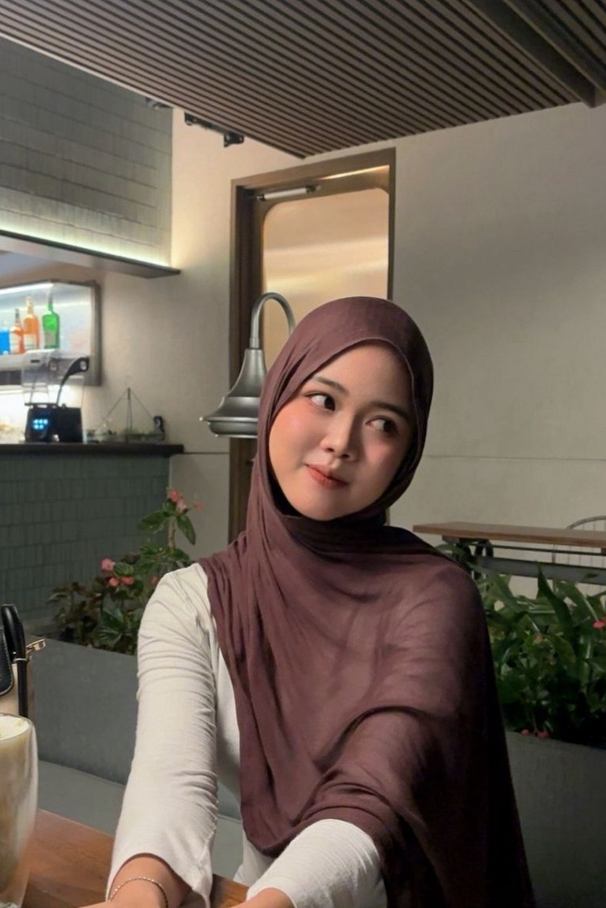
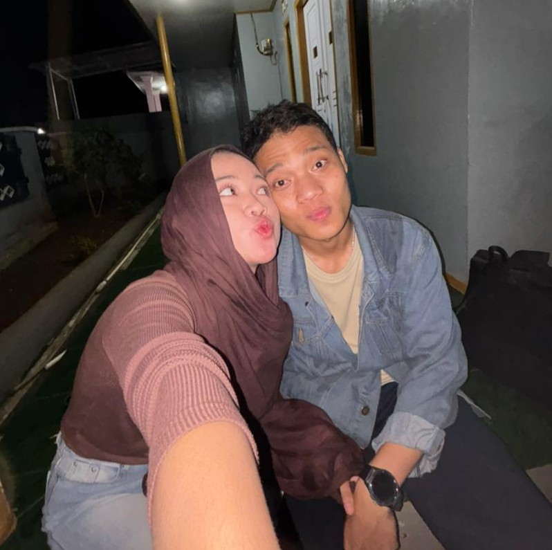
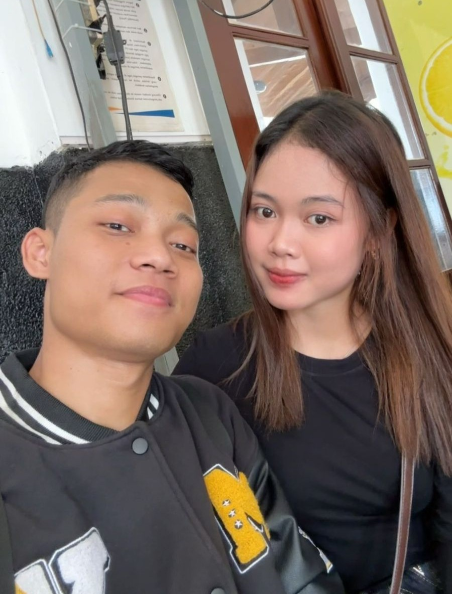

Aku bikin sesuatu kecil buat kamu, ngga mewah dan ngga sempurna, tapi setiap bagian di sini aku buat sambil mikirin kamu.
scroll-nya pelan-pelan ya sayang
dijawab jujur ya sayang
Beberapa momen kecil yang mungkin sederhana, tapi kalau sama kamu rasanya selalu punya cerita sendiri. ♡



“kalau bisa, aku mau menyimpan semua momen sama kamu.” ♡
Liaaa,
Aku nggak tahu harus mulai dari mana. Kadang aku ngerasa kata-kata itu terlalu kecil buat ngejelasin seberapa berharganya kamu buat aku.
Aku cuma mau kamu tahu satu hal: aku bersyukur banget bisa kenal kamu. Dari sekian banyak orang di dunia ini, gatau gimana ceritanya aku bisa menemukan seseorang yang bikin aku nyaman jadi diri sendiri.
Aku nggak janji semuanya bakal selalu sempurna. Mungkin nanti ada hari di mana kita capek, salah paham, atau sama-sama keras kepala. Tapi kalau boleh pilih, aku tetap mau intropeksi, tetap mau memperbaiki, dan tetap mau jalan bareng kamu.
Jadi kalau suatu hari kamu lupa seberapa berarti kamu buat aku, buka lagi ini ya sayang. Biar tulisan kecil ini ngingetin kamu kalau ada seseorang yang selalu punya tempat khusus buat kamu di hati kamu
Bukan cuma hari ini. Kalau aku masih diberi kesempatan, aku mau terus memilih kamu, lagi dan lagi.
Makasih sayang karna kamu sudah hadir dalam hidup aku dan selalu sabar sama aku yang kaku dan keliatan cuek ke kamu ♡